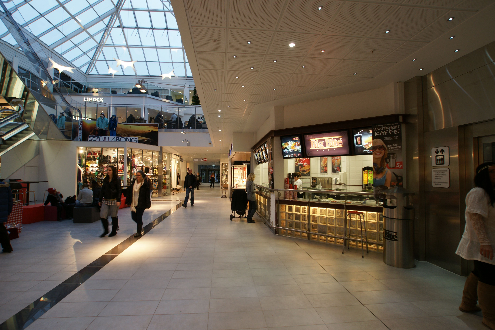
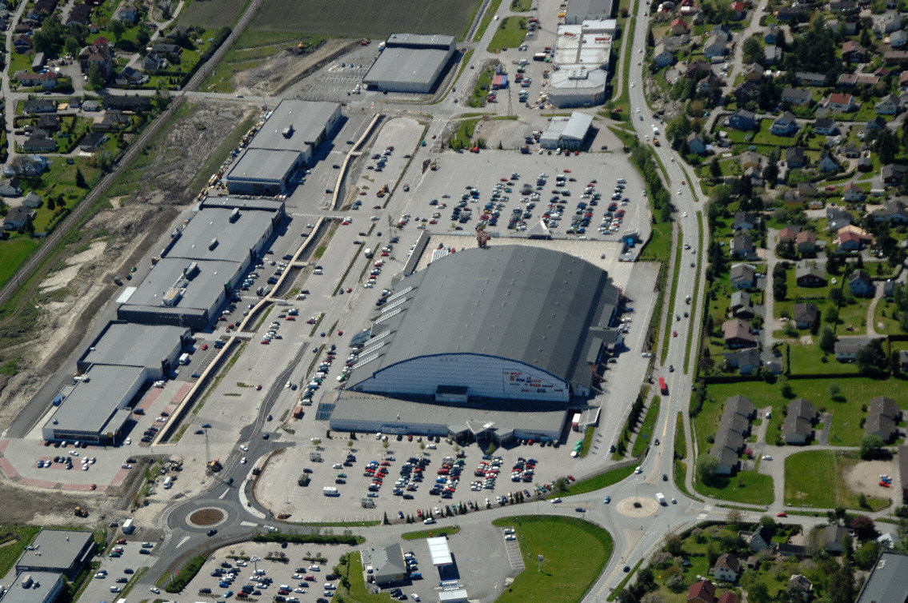
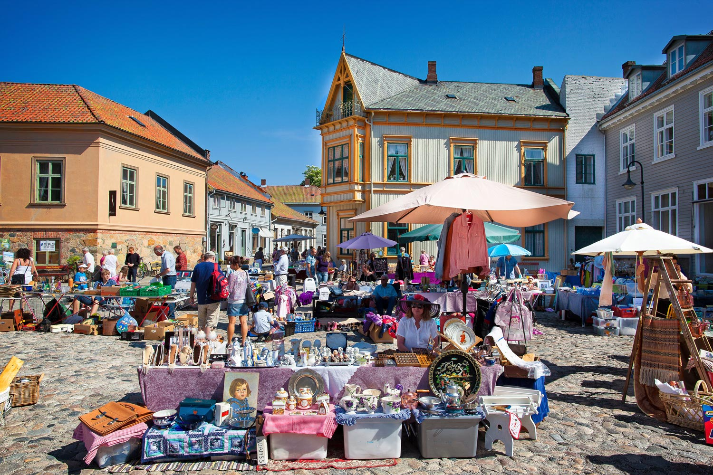

Torvbyen
Torvbyen er Østfolds ledende kjøpesenter og har med sine 80 butikker et stort utvalg av shoppingbutikker, spesialbutikker og tjenester. Her finnes butikker for alle, uansett alder!Senteret er et tidsriktig senter med lyse og moderne lokaler som skal inspirere og invitere til en god shoppingopplevelse. Senteret ligger midt i Fredrikstad sentrum, rett ved innfartsårene fra Sarpsborg og Moss. Bussterminalen ligger i bygget og det er ca 2 minutter til jernbanestasjonen med bil
Østfoldhallene
Østfoldhallene ligger midt mellom Sarpsborg og Fredrikstad, og er det største kjøpesenteret i Østfold. Med 67 butikker fordelt over 5 haller har vi et stort utvalg i alt fra klær og mote til sport, interiør, elektronikk, oppussing og bygg.
Frimarked i gamlebyen
Hver lørdag, kl 10:00 - 16:00 (søndag kl 12:00 - 16:00 i juli), i perioden april til desember (jul) forvandles torvet til et sydende marked der man kan gjøre morsomme og gode funn!Bare det å gå rundt å titte og ta inn over seg stemningen og den hyggelige og avslappende atmosfæren er en opplevelse i seg selv.